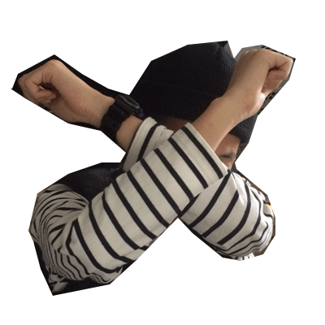

<idoctype html>
<head>
	<style>
	/* 애니메이션은 트랜지션과는 다르게 @keyframes를 별도로 이름을 달아서
		만들어주어야 합니다.(조금 귀찮음) 예제에서는 kirinMove라는 키프레임을 만들었어요*/

		#kirin{width:400px;height:400px;
			position:relative;
			animation:kirinMove 5s infinite linear paused;	}
	/* 우선 반드시 포지션을 absolute나 relative로 설정해야 합니다.
	infinite는 무한반복, linear는 속도를 일정하게, paused는 처음엔 멈춰 있으라는 설정입니다. 
	w3에 다양한 설정값들이 있어요(참고) */

	/* 이제 kirinMove라고 이름붙인 애니메이션을 만들어 봅시다.(W3사이트 한번 둘러보세요. from,to를 사용해서 시작과 끝만을 지정할수도 있고, 아래처럼 25%, 50%와 같이 퍼센트를 사용해서 중간중간 지정할수도 있습니다. 영상을 배우셨을 테니 키프레임에 대한 설명은 생략하겠습니다.) 
	kirinMove{} 이 중괄호 안에 다시 키프레임별로 중괄호가 들어갑니다.*/

		@keyframes kirinMove{
			0%{ top:0px; left:0px; transform: rotateZ(0deg)}
			25%{ top:0px; left:300px; }
			50%{ top:300px; left:300px;}
			75%{ top:300px; left:0px; }
			100%{ top:0px; left:0px; transform: rotateZ(1080deg);}
		}

	</style>
</head>
<body>
	<div id="kirin">
		
	</div>
	<script>
		var state = "stop";
		//현재 클릭할때마다 움직임을 토글하기 위해 현재 상태를 의미하는 변수를 하나 만들었습니다.

		//기린아를 클릭하면
		kirin.onclick = function(){
			//우선 콘솔에서 잘 클릭되는지 체크
			console.log("clicked!!");

			//만약에 state가 stop이면 
			if(state == "stop"){
				kirin.style.animationPlayState = "running";
				//스타일에서 애니메이션을 플레이해
				state = "play";
				//현재 상태를 플레이로 변경
			}else{
				//만약 stop이 아닌 상황이면
				kirin.style.animationPlayState = "paused";
				//스타일에서 애니메이션을 정지시켜
				state = "stop";
				//현재 상태를 스톱으로 변경
			}
		}
	
	</script>
</body>
